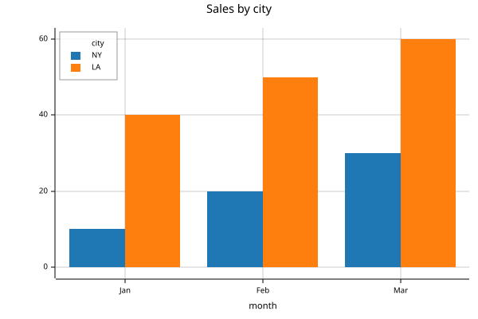
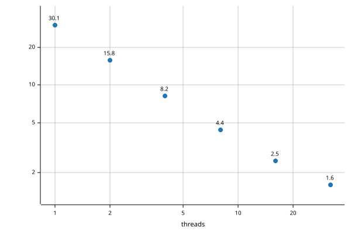

from basedpl import bpl, fn, Array, add, tally
import numpy as npPython
Native arrays, callable functions and Python conversions.
Rustymath vs BasedPL
Both packages use Rustymath’s numerical core and share leading-axis broadcasting, Python selectors, and the .keys and .names metadata interface. Choose Rustymath for eager numerical arrays, or BasedPL for BPL values and composable functions.
| Rustymath | BasedPL | |
|---|---|---|
| Values | Homogeneous arrays of fixed dtype | Exact, mixed and nested values, functions and operators |
| Integer arithmetic | Fixed-width results can wrap | Ordinary exact integers can grow; explicit fixed-width integers wrap |
| Execution | Eager numerical operations | Function fusion, batching and automatic differentiation |
| Results | Python scalars when all inputs are scalars | Native BPL values; convert explicitly with .py or .np |
| Function notation | Ordinary Python calls | Also currying, composition and BPL argument/axis conventions |
| Settings | Explicit Mathish functions and a process-wide thread setting | Process-wide preferences shared with BPL evaluation |
Python operators prefer BasedPL when a Rustymath array and a BasedPL value occur together. Converting ordinary arrays preserves supported dtypes and labels. Active BPL differentiation or batching values cannot convert to Rustymath.
Rustymath’s ordinary functions use exact comparisons. The rustymath.mathish namespace provides J-inspired numerical conventions. BasedPL enables them for Mathish types under default dynamic kinds. bpl.prefs({'mathish': False}) disables them without changing the kinds setting. Numbers describes the comparison and zero-division rules.
Native arrays
bpl is the BPL workspace. It keeps its names for the life of the Python process. Calling it returns a native basedpl.Array. It retains nesting, exact numbers and empty-array prototypes. Use .np or .py to convert it.
v = bpl('1 2 4')
v1 2 4Python operators use BPL’s array semantics. Precedence follows Python, which multiplies before adding:
v * 2 + 13 5 9Indexing counts from 0, as in Python. Negative positions count from the end. Slices take a start, stop and step, as Python’s do. Iteration yields rows of a matrix rather than individual items:
a = bpl('2 3⍴⍳6')
a.shape, a[0, :], a[:, 1:], a[:, -1], list(a)((2, 3),
[0., 1., 2.],
[[1., 2.], [4., 5.]],
[2., 5.],
[[0., 1., 2.], [3., 4., 5.]])BPL also exposes functions by their word names. add.reduce is +/, and add.reduce.each is +/¨. Applied to this nested vector, +/¨ sums each item:
nested = bpl('[[1 2] [3 4 5]]')
nested(1 2⋄3 4 5)In Python, chain the corresponding word functions:
add.reduce.each(nested)3 12f = add.reduce.each
f(nested)3 12Array(1, 2, 4) makes a vector, as does Array([1, 2, 4]). A single argument keeps its own meaning: Array(3) is an atom. Python integers become ordinary exact values. Their NumPy export uses int64 under dynamic kinds.
Functions compose too: add.reduce / tally builds the mean function +/÷≢. Its result is still a native array, even when it holds a single number:
exact = Array(1, 2, 4)
assert exact.np.dtype == np.int64
mean_native = add.reduce / tally
mean_native(exact)7ᵣ3The native representation uses Python numeric notation: 2 is exact and 2. is approximate. .bpl returns the BPL display as a string:
v.bpl, exact.bpl('1 2 4', '[1 2 4]ₓ')The workspace
bpl is shared by the whole Python process, including the notebook magics. bpl(']clear') removes every name and restores the starting display settings.
Calling bpl returns a native array or function and prints explicit BPL output. It suppresses implicit BPL display. Use .np or .py when you need a converted result:
bpl('3 3⍴⍳9').nparray([[0., 1., 2.],
[3., 4., 5.],
[6., 7., 8.]])Module and bpl attributes give the builtins by name. For example, bpl.conjugate(2+3j) conjugates, bpl.add(2) adds 2, and bpl.multiply(2) doubles. Word functions explains the names:
bpl.conjugate(2+3j).py, bpl.add(2)(3).py, bpl.multiply(2)([1, 2, 3]).py((2-3j), 5, array([2, 4, 6]))Keyword arguments bind Python values in the workspace. Square brackets read a BPL expression or assign a value:
bpl(x=np.arange(1, 6))
bpl['v'] = [3,1,4,1,5]
bpl['<v'].nparray([1, 1, 3, 4, 5])fn makes a composable Function from a BPL function expression. It is the same as bpl.fn. Pass one argument for a monadic call or two for a dyadic call. Python integers stay exact. .py converts this mean to a Fraction:
bpl('mean←{⍝ Mean of a vector\n+/⍵ ÷ ≢⍵}')
mean = fn('mean')
mean([1,2,4]).pyFraction(7, 3)Names and help
Type mean? for its comment help and mean?? for BPL source. The same information is available programmatically:
mean.source, bpl.names('me')('{⍝ Mean of a vector\n+/⍵ ÷ ≢⍵}', ['mean'])See names and help for source lookup, erasure and inspection APIs.
fn is late-bound: fn("foo") follows later redefinitions of foo. Use bpl("foo") to retain its current function.
Calls print only explicit output (⎕← and display commands). Each output prints as soon as BPL produces it, before any later ⎕ prompt. A second argument of 'explicit' captures it instead, returning a Result with the native .value and the captured .output:
r = bpl('⎕←x ⋄ ≥x', 'explicit', x=3)
assert r.value.py == 4
assert r.output == ['3ₓ']'repl' also captures implicit expression display, as the BPL prompt shows it. The %%bpl cell magic uses it. In ordinary Python notebooks, append ; to suppress display of a call’s return value.
Labelled arrays
data = [[10, 20, 30], [40, 50, 60]]
keys = ('NY', 'LA'), ('Jan', 'Feb', 'Mar')
sales = Array(data, keys=keys, names=('city', 'month'))
sales.names, sales.keys(('city', 'month'), (('NY', 'LA'), ('Jan', 'Feb', 'Mar')))Keys select as positions do. A slice of keys includes its end key, as pandas’ .loc does:
sales[:, 'Jan':'Feb'] ₓ Jan Feb
NY 10 20
LA 40 50Arithmetic matches named axes and aligns their keys, rather than relying on order. This adjustment lists the months backwards but still adds 1 to January, 2 to February and 3 to March in each city. .df copies the result to pandas, preserving labels; install pandas to use it.
months = 'Mar', 'Feb', 'Jan'
adjustment = Array(3, 2, 1, keys=(months,), names=('month',))
(sales + adjustment).df| month | Jan | Feb | Mar |
|---|---|---|---|
| city | |||
| NY | 11 | 22 | 33 |
| LA | 41 | 52 | 63 |
Assign .keys or .names to replace labels without reordering values. Each tuple has one entry per axis; None marks an unlabelled axis or clears all labels when assigned to the property. Relabelling an Array(sales) copy leaves sales unchanged:
renamed = Array(sales)
renamed.names = ('place', 'month')
renamed.keys = (('New York', 'Los Angeles'), None)
assert sales.names == ('city', 'month') and sales.keys == keys
renamed.names, renamed.keys, sales.names(('place', 'month'), (('New York', 'Los Angeles'), None), ('city', 'month'))Plots
plot draws a chart from an array. Keys label the x axis and the legend, and axis names become the axis titles. Keyword arguments set the chart’s options, with a dictionary for each nested option:
legend = {'position': 'top-left'}
bpl.plot(sales, mark='bar', title='Sales by city', legend=legend)
A dict of equal-length lists is a table. Its x column supplies the x values, and every other column is a series. Plots lists all the settings.
threads = [1, 2, 4, 8, 16, 32]
seconds = [30.1, 15.8, 8.2, 4.4, 2.5, 1.6]
bpl.plot({'x': threads, 'seconds': seconds}, mark='point', labels=1,
x={'title': 'threads', 'scale': 'log'}, y={'scale': 'log'})
Values and conversion
Array retains atoms, shape, nesting, numeric domain and empty prototypes. An atom and a scalar both have .shape == (). .is_atom is True only for an atom. .bpl gives the BPL display. .py converts atoms to Python values and character vectors to strings. Other arrays become NumPy arrays, including scalars. .np always returns an ndarray.
For axis-keyed arrays, .py returns a dict at rank 1 and a pandas DataFrame at higher ranks. .np copies the values. Attach labels with Array(data, keys=[rows, cols]); use None for an unkeyed axis. .keys returns a tuple of label tuples or None.
names names dimensions; keys names positions within them. Matching axis names align before positional broadcasting. .names returns one name or None per dimension.
from basedpl import Array, addm = Array([[1, 2, 3], [4, 5, 6]], names=('city', 'month'))
v = Array([10, 20, 30], names=('month',))
assert (m + v).np.tolist() == [[11, 22, 33], [14, 25, 36]]
assert add.reduce['month'](m).np.tolist() == [6, 15]
assert add.reduce['month'](m).names == ('city',).df converts any array to a DataFrame. The last axis gives the columns. The earlier axes give the rows, as a MultiIndex above rank 2. Unkeyed axes are labelled from 0. A vector of columns of one length, as •csv or a DataFrame’s Array gives, converts by columns instead: each column keeps its own dtype, and its keys give the index. Install pandas for this conversion. Pandas is imported on demand.
Axis names become pandas index/column names, including MultiIndex level names.
from fractions import Fraction
from basedpl import Arrayassert Array(2).bpl == '2ₓ'
assert Array(2.).bpl == '2'
assert Array(Fraction(1, 3)).py == Fraction(1, 3)
assert Array([1, None]).bpl == '1 $n'
assert Array("x").shape == (1,) and Array({"n": "x"})["n"].shape == ()
assert Array([3, 2.5]).bpl == '3 2.5' and Array(value=3, score=2.5).bpl == '["value":3ₓ "score":2.5]'| Python input | BPL value |
|---|---|
bool, NumPy Booleans |
Boolean |
int |
Weak ordinary integer, exact under dynamic kinds |
| NumPy integers and typed integer buffers | Fixed-width integer, retaining supported dtype |
float |
Weak approximate real, at the default width |
Fraction |
Exact rational |
complex |
Weak approximate complex |
None as an item of a list, dict or frame |
NaN, $n. A bare None doesn’t convert |
str |
Character vector. Inside a list, tuple or dict, a one-character string is a character atom: ["a", "b"] gives "ab" |
Rectangular list/tuple/range |
Ordinary array |
| Ragged list/tuple | Nested array |
NumPy ndarray or __array__ provider |
Array preserving shape and numeric domain |
dict with string keys |
Keyed vector, recursively. .py returns a dict |
| pandas DataFrame | Keyed vector of its columns, as •csv gives. The index keys each column where every label is a string |
NumPy float and complex scalars keep their explicit widths and are strong, including inside sequences beside weak Python floats or complex numbers. Exact numbers still join losslessly. A list’s items combine under BPL’s usual joining rules: [1, 2.5] gives two floats. A dict’s values each keep their own kind, as a record’s fields do. In {"name": "x", "age": 3, "score": 2.5}, age stays exact beside the float score. Its name is the character atom 'x'.
.np or np.asarray(a) always produces an ndarray. Booleans use bool. Fixed integers keep their selected dtype: uint8, int16, int32 or int64. Ordinary integers that fit signed 64 bits use int64 under dynamic kinds, and at least the int preference’s computation width under static kinds. Floats use float16, float32 or float64; complex arrays use complex64 or complex128. Fractions, large integers, nested arrays and mixed exact and approximate values use object. Character arrays use U1. The arrays inside a .py result, and the columns of a .df result, use the same dtypes.
import numpy as nprange works on its own or inside a rectangular sequence. Objects with __array__, such as a pandas Series, also convert. The numeric values transfer without pandas labels:
a = Array([range(1, 4), range(4, 7)])
np.testing.assert_array_equal(a.np, [[1, 2, 3], [4, 5, 6]])np.testing.assert_array_equal(Array(sales.df.loc['NY']), [10, 20, 30])
Array(sales.df.loc['NY'])[10 20 30]ₓ₈A pandas DataFrame becomes a keyed vector of its columns, as •csv gives, so each column keeps its own kind. The index keys each column’s rows where every label is a string. .df gives the frame back:
import pandas as pdorders = pd.DataFrame({'item': ['tea', 'cake'], 'qty': [2, 5], 'price': [3.5, 4.25]}).set_index('item')
t = Array(orders)
assert t.df.equals(orders)
t["qty":["item":2]⍴["tea":2 "cake":5]ₓ₈ "price":["item":2]⍴["tea":3.5 "cake":4.25]].py and .np copy. Foreign buffer exporters, including a memoryview or an array.array, supply shape and numeric items but no labels. Rustymath arrays transfer .keys and .names as well, in either direction, without going through NumPy. Rustymath cannot represent BPL’s nested, mixed or arbitrary exact values; convert those explicitly before passing them.
np.asarray(a, copy=False) gives a read-only view when the storage already has the requested export dtype. A dtype conversion requires a copy and raises with copy=False. Under dynamic kinds, ordinary integer storage narrower than 64 bits needs widening to int64 for export. Compatible windows, reversals and drops export their source’s strides without building their items.
a.own() gives the array that .np gives, but moves compatible storage where nothing else holds it, as for a fresh result. Afterwards a holds nothing, and using it raises ValueError. Passing an Array back to BPL shares its value until either owner is updated. Keep Array to preserve empty prototypes and exact nesting.
The constructors preserve labels on ordinary arrays. Mixed Python operators use BasedPL:
import rustymath as rmrusty_sales = rm.array(sales)
roundtrip = Array(rusty_sales)
assert roundtrip.names == sales.names and roundtrip.keys == sales.keys
np.testing.assert_array_equal(roundtrip, sales)
assert isinstance(rusty_sales + sales, Array)
assert isinstance(sales + rusty_sales, Array)
rusty_sales, roundtrip.names, roundtrip.keys(Array([[10, 20, 30], [40, 50, 60]], dtype=int64, keys=(('NY', 'LA'), ('Jan', 'Feb', 'Mar')), names=('city', 'month')),
('city', 'month'),
(('NY', 'LA'), ('Jan', 'Feb', 'Mar')))Fixed-width integers
NumPy integer buffers retain their fixed type in BPL. Arithmetic and reduction wrap at that type. A wider typed seed selects a wider accumulator: add.reduce(np.int64(0), pixels) is 0ₓ₈+/pixels. The native sum reads the bytes directly rather than building a widened input array. pixels.exact removes fixedness without copying the data and uses ordinary integer arithmetic:
pixels = Array(np.array([200, 100], dtype=np.uint8))
wrapped = add.reduce(pixels)
ordinary = add.reduce(pixels.exact)
wide = add.reduce(np.int64(0), pixels)
assert [wrapped.py, ordinary.py, wide.py] == [44, 300, 300]
assert wide.np.dtype == np.int64
wrapped.bpl, ordinary.bpl, wide.bpl('44ₓ₁', '300ₓ', '300ₓ₈')The seed participates in promotion and cannot narrow wider input. An ordinary Python 0 does not request i64. Applying a width conversion to the completed reduction cannot recover a wrapped total. Numbers gives the numeric promotion and conversion rules. See Reduce for the BPL spelling.
Python int arguments are weak. Array(100) preserves that weakness. An integer selected from Array([100]) is strong. The last addition below uses ordinary arithmetic:
(pixels + 100).bpl, (pixels + Array(100)).bpl, (pixels + Array([100])[0]).bpl('[44 200]ₓ₁', '[44 200]ₓ₁', '[300 200]ₓ')The properties .uint8, .int16, .int32, .int64, .float16, .float32 and .float64 convert an array to that type. .exact gives ordinary integers. These match BPL’s numeric suffixes. A marker on a function converts its result after computation:
pixels.int32, add.reduce.int32(pixels)([200, 100], Array(44))Array operations
Arithmetic aligns leading axes. Indexing starts at 0, and negative positions count from the end. Slices work as in Python. ... keeps all remaining axes. None inserts an unnamed, unkeyed length-one axis without consuming an input axis, as ¯∞ does in BPL indexing. Python : and ... correspond to BPL : and ∞:
np.testing.assert_array_equal(a + [10, 20], [[11, 12, 13], [24, 25, 26]])
np.testing.assert_array_equal(a[1, :], [4, 5, 6])
np.testing.assert_array_equal(a[:, [0, 2]], [[1, 3], [4, 6]])
np.testing.assert_array_equal(a[:, -1], [3, 6])
np.testing.assert_array_equal(a[:, ::-1], [[3, 2, 1], [6, 5, 4]])
np.testing.assert_array_equal(a[..., 0], [1, 4])
assert a[:, None, :].shape == (2, 1, 3)
assert a[None, ..., None].shape == (1, 2, 3, 1)
a[:, None, :].shape, a[None, ..., None].shape((2, 1, 3), (1, 2, 3, 1))A path array selects rows inside nested matrices. Full slices, None and ... can follow it for reading and assignment:
matrices = bpl('[[1 2 3⋄4 5 6] [7 8 9⋄10 11 12]]')
row_paths = bpl('[[0 1] [1 0]]')
rows = matrices[row_paths, ..., None]
matrices[row_paths, ..., None] = rows * 10
rows.shape, matrices[row_paths]((2, 3, 1), [[40., 50., 60.], [70., 80., 90.]])Comparisons return arrays. % uses Python’s operand order and // is floor division. Array @ applies BPL’s +.×⍤2. It multiplies vectors and matrices, broadcasting leading batch axes.
Array &, | and ~ require Boolean or integer inputs and perform bitwise AND, OR and NOT. Their BPL counterparts are ∧ᵇ, ∨ᵇ and ~ᵇ (Bitwise). Plain ∧ and ∨ retain LCM and GCD.
bits = Array([6, 3])
np.testing.assert_array_equal(bits & 5, [4, 1])
bits & 5, bits | 5, ~bits([4, 1], [7, 7], [-7, -4])abs gives magnitudes. Python brackets interpret a Boolean vector as a mask for its axis, whose length it must match. BPL source indexing treats Booleans as numeric positions instead. Apply monadic + to a BPL mask for explicit 0/1 positions: a[+mask]. An empty list selects no positions.
values = Array([-3, 2, -1, 4])
magnitudes = abs(values)
np.testing.assert_array_equal(values[values > 0], [2, 4])
magnitudes, a[:, a[0] > 1]([3, 2, 1, 4], [[2, 3], [5, 6]])len, iteration and in use major cells: items of a vector, rows of a matrix. Membership compares the whole query with one cell, using native tolerant matching. A query of the wrong rank or cell shape is absent. A string is one item where the array’s items are strings, as in a list of strings, and a row where the array is a character matrix. Keys don’t change value membership. Inspect .keys to search labels. Atoms and rank-0 arrays are not iterable.
With exactly one item, bool(a) uses that item’s truth value. Other item counts raise ValueError.
assert [1, 2, 3] in a and 3 not in a
letters = Array('abc')
assert 'a' in letters and 'z' not in letters and 'ab' not in letters and Array('a') not in letters
assert 'ab' in Array(['ab', 'cd']) and 'ef' not in Array(['ab', 'cd']) and 'cd' in bpl('2 2⍴"abcd"')
2 in values, [1, 2, 3] in a, 3 in a(True, True, False)Assignment replaces values in the Python array owner. Earlier selections, Array(a) copies and functions that captured its value remain unchanged. The same selectors, including None, work for reading and assignment:
previous = Array(values)
selection = values[::2]
values[None, ::2] = [[-30, -10]]
np.testing.assert_array_equal(previous, [-3, 2, -1, 4])
np.testing.assert_array_equal(selection, [-3, -1])
previous, values([-3, 2, -1, 4], [-30, 2, -10, 4])Under applies a function at selected positions and returns a new array without changing its argument:
updated = bpl.multiply(10).under([0, 2])(previous)
previous, updated([-3, 2, -1, 4], [-30, 2, -10, 4])Callable functions
.fn() creates a callable BPL function. One argument supplies ⍵, and two supply ⍺ and ⍵. Arguments pass directly as values.
mean = bpl.fn('{+/⍵ ÷ ≢⍵}')
assert mean([1, 2, 4]).py == Fraction(7, 3)
assert mean([1., 2., 4.]).py == 7 / 3
add = bpl.fn('+')
np.testing.assert_array_equal(add([1, 2, 3], 10), [11, 12, 13])A Python int, float or complex passed to a BPL function is weak, as NumPy treats Python scalars, and so is a float or complex literal in BPL code. A weak number takes the width of the arrays beside it: add(x, 2.0) keeps a 32-bit x at 32 bits, and so does +2.0 in BPL. A literal with a width marker, such as 2.0ₚ, is strong, as np.float64(2.0) is in NumPy, and widens 32-bit floats to 64 bits:
x = np.array([1.5, 2.5], dtype=np.float32)
assert add(x, 2.0).np.dtype == np.float32
assert bpl['(32•float 1.5 2.5)+2.0'].np.dtype == np.float32
assert bpl['(32•float 1.5 2.5)+2.0ₚ'].np.dtype == np.float64.fn('g') follows later redefinitions of g. bpl('g') keeps the function that g holds now.
import basedpl as bKeyword arguments become ⍺, as a keyed vector. Positional arguments become ⍵. One positional argument is ⍵ itself, several form a vector, and none gives ⍬. System functions take their options as ⍺. In Python, pass those options as keyword arguments. Element functions take attributes the same way:
circle = b.element('circle')
orange = circle(cx=30, cy=50, r=20, fill='orange')
blue = circle(cx=70, cy=50, r=20, fill='steelblue')
pic = b.svg(orange, blue, width=200)
picThe keyword arguments became attributes. System functions read keyword arguments as options:
b.xml.undo(circle(r=10)), b.json('{"a": null}', fill=0)('<circle r="10"/>', {'a': 0})CSV options work the same way. nget and nput read and write files, as in b.nput(text, path='copy.csv'):
table = b.csv('price,qty\n10.5,2\n20.0,4\n')
text = b.csv.undo(table, separator=';').py
b.csv(text, separator=';').py{'price': array([10.5, 20. ]), 'qty': array([2, 4])}r compiles a regex into keyed functions, which Python indexes by name:
p = b.r(r'([a-z]+)([0-9]+)')
p['replace']('$2:$1', 'ab12')12:abFunction vectors, such as [+ × ÷], retain callable handles. Indexing with a single position, first and pick return the selected function:
from basedpl import first, pickfs = bpl('[+ × ÷]')
assert pick(1, fs)(2, 3).py == 6
assert first(fs)(2, 3).py == 5Array(f, g) constructs a function vector. Keyword arguments construct a record, as in Array(mean=mean, count=tally). Combining positional data with record fields raises TypeError. keys and names are reserved for axis metadata; use a dict for record fields with those names. .py and object-dtype .np export a function vector’s items as Python callables.
An array that holds a function as an item is a FunctionArray. Calling it calls each function on the whole arguments, as aggs data does in BPL, and each other item is its own result. An array that holds no function isn’t callable, so callable, which pandas and other libraries check before calling an argument, treats it as data:
from fastcore.test import expect_failaggs = Array(mean=mean, count=tally)
assert callable(aggs) and not callable(Array([1, 2, 4]))
aggs([1, 2, 4])["mean":7ᵣ3 "count":3ₓ]with expect_fail(TypeError): Array(1, count=3)data >> aggs calls it too. .fn gives the array as a Function, which takes operators and composition. Here Rank calls it on each row of a matrix:
assert ([1, 2, 4] >> aggs).py == aggs([1, 2, 4]).py
aggs.fn.rank(1)([[1, 2, 4], [3, 3, 3]])mean count
7ᵣ3 3ₓ
3ₓ 3ₓf.source returns the BPL source. f.inspect() returns the source and help. bpl.names(prefix, classes) lists visible bindings. bpl.inspect(name) reads a name or glyph. IPython supports f?, f?? and name completion in bpl strings. See names and help.
A user operator comes back as an Operator, whether it’s a workspace name or a field of a record from •load. Call it with its operand, or both operands of a dyadic operator, to get a Function. Bind an Operator like any other value:
bpl('again←{⍶ ⍶ ⍵}')
again = bpl.again
assert again(bpl.fn('≥'))(3).py == 5
bpl['repeat'] = again
assert bpl('-repeat 3').py == 3
again{⍶ ⍶ ⍵}Word functions
Each builtin function has a Python name for each valence, such as add, subtract, multiply and divide, plus its glyph name, such as plus and times. The names are attributes of basedpl and bpl, and imports from basedpl. A valence name selects one valence. Called with one argument, a dyadic name binds the right argument. .left(x) binds the left argument instead. A glyph name gives the function with both valences, as fn('+') does.
from basedpl import add, multiply, subtract, tally, conjugate, pi_timesassert multiply(2)(3).py == 6
assert subtract(2)(5).py == 3 # 5−2
assert subtract.left(2)(5).py == -3 # 2−5
mean = add.reduce / tally
assert mean([1, 2, 4]).py == Fraction(7, 3)assert conjugate(2).py == 2
assert b.divide(2)(3).py == Fraction(3, 2)
assert pi_times(1).py == np.piLookup accepts a glyph, a glyph name or a valence name. Use underscores for hyphenated names, as in circle_star, and a trailing underscore for Python keywords, as in not_. A glyph that is a legal Python identifier, such as π, works directly. Get other glyphs with getattr(bpl, '+'). System functions also accept names without •. When names clash, existing Python attributes come first, then glyph and valence names, then system names. Lookup uses only exact registered names. An unknown name raises AttributeError.
A workspace name is also an attribute of bpl when no builtin has that name. After add←99, bpl.add is still the builtin, and bpl['add'] gives 99. dir(basedpl) lists the builtins, and dir(bpl) also lists workspace names.
assert bpl.multiply(2, 3).py == 6
assert bpl.index_of([4, 2, 7], [7, 4]).py.tolist() == [2, 0]
assert getattr(bpl, '+')(2, 3).py == 5
assert bpl.conjugate(1+2j).py == 1-2j
assert bpl.add(2)(3).py == 5
assert bpl.sign(-2).py == -1
assert bpl.multiply(2)(3).py == 6
assert bpl.distribution('normal')['cdf'](0.).py == 0.5Names distinguish valences: sign/multiply, shape/reshape, indices/index_of, first/take, mix/pick. A glyph name keeps both valences, so times(-2) gives the sign of -2, and times(2, 3) gives 6. multiply(2.) binds an approximate number, and multiply(2) binds an exact one. Operators use the underlying BPL function.
exponential and exponent name the monadic and dyadic forms of *. power names the operator ⍣, exposed as f.power(n).
basedpl.symbols is the shared naming table used by Python functions and REPL and notebook completion. Each row is a dict with the keys glyph, name, kind, monad, dyad, monad_rank, dyad_ranks, hanzi and shortcut. name is the glyph name, which names the character and the glyph’s reference page. kind is one of function, monadic-operator, dyadic-operator, argument, literal, comment, system or syntax. monad and dyad hold the names for what the glyph does: a function’s monadic and dyadic names, or an operator’s names for its derived function’s valences. They hold "" where there’s no name for that valence. An operator whose valences do the same thing holds its one name in monad, as does every other glyph with a name. monad_rank and dyad_ranks give a function’s natural ranks as BPL text, such as 1 or 1 ∞, where ∞ is the whole argument. hanzi holds two strings of single-character Hanzi spellings, simplified then traditional, each with its preferred spelling first. shortcut is the REPL’s formatted key suffix, derived from layout.json: " h" for Alt-h, " o c" for Alt-o then c, or "" when absent. The table is directly JSON-serializable for JavaScript consumers.
Every operator also has a property named by its glyph name, which gives the derived function with both valences: f.tilde_diaeresis is f⍨, and f.slash is f/. The table lists the names for what each operator does.
| Python | BPL |
|---|---|
f.reduce, f.scan, f.reduce_first, f.scan_first |
f/, f\, f⌿, f⍀ |
f.each, f.self, f.commute |
f¨; f⍨ with one argument; f⍨ with two |
f.bitwise |
fᵇ, a Boolean function applied to integer bits |
f.outer_product, f.determinant(g), f.inner_product(g) |
f⊗; f.g with one argument; f.g with two |
f.key, f.stencil(s) |
f⌸, f⌺s |
f.rank(r), f.atop(g) |
f⍤r, f∘g |
f.after(g), f.over(g), f.before(g) |
f↢g, f⍥g, f↣g |
f.power(n), f.power([g]) |
f⍣n, with n a count, a list of counts, ∞ or a predicate; f⍣[g], which keeps the history until g |
f.undo, f.undo(g), f.under(g) |
f⁻¹; f with the inverse g, as f⁻¹←g attaches it; f@g, with g a function, positions or [p] |
f.valences(g) |
f⊘g: f with one argument, g with two |
f.agenda(g) |
f⍚g: the result of f picks which function in the vector g runs, on the whole argument or on each cell |
f.derivative, f.derivative(g) |
f∂, the Jacobian, which with two arguments differentiates with respect to the right one; f with the derivative g, as f∂←g attaches it |
f[k], f.axis(k) |
f⍠k, axes k |
f.optimize(x, lower=l) |
["lower":l] f⇄ x |
Operator properties chain in BPL order: subtract.commute.reduce is -⍨/. Operators needing another operand retain a hole until supplied:
twice = multiply(2)
assert twice.power.each(3)([1, 2]).py.tolist() == [8, 16] # twice⍣3¨f.power.each(n) constructs (f⍣n)¨, just like f.power(n).each. For multiple missing operands, successive calls fill the innermost construction first: f.power.each.power(n)(m) constructs ((f⍣n)¨)⍣m. Complete the operands before passing evaluation arguments.
Arithmetic between functions makes forks: f+g is (f+g). f @ g is inner product. f << g is the Atop f∘g, and f >> g is g∘f. f ** n is power. Bitwise operators also compose native functions. value >> (f >> g) calls the composed function once. value >> f >> g makes separate calls and misses whole-composition optimizations. Python’s precedence applies when building these expressions:
bit_filter = (b.same & 5) | 8
np.testing.assert_array_equal(bit_filter([6, 3]), [12, 9])
[6, 3] >> (bit_filter >> b.add.reduce)21ₓMath families: prime/prime_mode (⍭), factors/factor_spec (⨸), roots/polyval (⌻). windows is dyadic ↕.
Roots: sqrt/root (√). Complex coordinates: real_imag (∨), polar (∧), cis (○). pi_times/pi_ratio (π) give π multiples/fractions. Also square, double, decrement, increment, classify, binary_encode and binary_decode.
from basedpl import prime, factors, polyvalassert prime(9).py == 29
np.testing.assert_array_equal(factors(700), [2, 2, 5, 5, 7])
p = polyval.left([1, 2, 3])
assert p(2).py == 17
assert p.derivative(2).py == 14
np.testing.assert_array_equal(p.derivative([1, 2]), [[8, 0], [0, 14]])
cube = bpl('{⍵*3}').derivative(bpl('{⍺×3×⍵*2}'))
assert cube(2).py == 8 and cube.derivative(2).py == 12
np.testing.assert_array_equal(add.left(1).power([0, 1, 2, 3])(0), [0, 1, 2, 3])A scalar perturbation gives the directional derivative J @ direction without building the full Jacobian. Differentiating a weighted sum of outputs gives weights @ J. These compositions use the same derivative operator:
point = Array([1., 2.])
direction = Array([2., -1.])
weights = Array([3., 4.])
along = (p << (point + b.same * direction)).derivative(0.)
weighted = (b.add.reduce << (weights * p)).derivative(point)
np.testing.assert_allclose(along, [16, -14])
np.testing.assert_allclose(weighted, [24, 56])
along, weighted([16., -14.], [24., 56.])Numerical workflows
matrix_divide(rhs, matrix) puts the right-hand side first. It solves square systems or finds a least-squares solution. Exact inputs stay exact. Here a line fitted to three observations has intercept 1 and slope 2:
design = Array([[1, 1], [1, 2], [1, 3]])
observed = Array([3, 5, 7])
coefficients = b.matrix_divide(observed, design)
np.testing.assert_array_equal(design @ coefficients, observed)
coefficients[1 2]ₓDecompositions return records of factors. Request a truncated SVD with rank, inspect its fields, or reconstruct its low-rank approximation with .undo:
svd = b.decompose(design, kind='svd', rank=1)
approximation = b.decompose.undo(svd, kind='svd')
svd['u'].shape, svd['s'], svd['v'].shape, approximation((3, 1),
[4.0791433289417345],
(2, 1),
[[0.5307147558416979, 1.2064393843590446], [0.8992918259420687, 2.044301698617718], [1.2678688960424391, 2.88216401287639]])Optimization works on native BPL functions, including composed word functions. Here the loss is the same line fit’s sum of squared residuals. report=True returns the point, value, convergence flag and evaluation count. Ordinary Python callbacks are not BPL operands.
model = (b.add @ b.multiply).left(design)
loss = b.add.reduce << b.square << (model - observed)
fit = loss.optimize([0., 0.], report=True)
np.testing.assert_allclose(fit['x'], coefficients, atol=1e-6)
fit['x'], fit['value'], fit['converged'], fit['evaluations']([0.9999999999999999, 2.], Array(0.0), Array(True), Array(9))A matrix product of windows computes valid correlation. Reverse the kernel for convolution. The windows have one row per output position and one column per kernel item:
signal = Array(range(8))
kernel = Array([1, 0, -1])
frames = b.windows(len(kernel), signal)
correlation = frames @ kernel
convolution = frames @ b.reverse(kernel)
frames.shape, correlation, convolution((6, 3), [-2, -2, -2, -2, -2, -2], [2, 2, 2, 2, 2, 2])For multiple channels, trailing axes stay inside each window. A two-row window specification gives sizes then movements. Flatten the window and channel axes together before multiplying by a flattened kernel:
samples = b.reshape([8, 2], range(16))
patches = b.windows([[3], [2]], samples)
channel_kernel = Array([[1, 2], [0, 0], [-1, -2]])
patches.shape, b.reshape([3, 6], patches) @ b.ravel(channel_kernel)((3, 3, 2), [-12, -12, -12])Keep a seeded generator to draw repeatedly from one stream. Pass it as the left argument to a distribution’s sample function. Recreating the generator with the same seed repeats the draws:
generator = b.rand(42)
normal = b.distribution([2., 0.5], 'normal')
first_draw = normal['sample'](generator, [3])
second_draw = normal['sample'](generator, [3])
np.testing.assert_array_equal(first_draw, normal['sample'](b.rand(42), [3]))
first_draw, second_draw([2.4163560791590704, 1.8655138034731817, 1.5459736645007867],
[2.463497459399539, 2.6376029532258425, 2.2547966544824654])Printing functions
to_python(f) shows a function using Python word names and combinators.
An ambivalent primitive prints as its glyph name, because both valences reach it. The tally tine of a mean prints as equal_underbar_slash, since x (add.reduce / tally) y applies ≢ to two arguments.
from basedpl import to_python, add, multiply, tallyassert to_python(add.reduce / tally) == 'add.reduce / equal_underbar_slash'
assert to_python(multiply(2.)) == 'multiply(2.)'
assert to_python((add.reduce / tally).each) == '(add.reduce / equal_underbar_slash).each'For an ambivalent function, dyad=True selects the dyadic spelling. Word functions already specify their valence.
assert to_python(bpl('×')) == 'times'
assert to_python(bpl('×'), dyad=True) == 'multiply'
assert to_python(bpl('2-')) == 'subtract.left(2.)'
assert to_python(bpl('{⍵×2}¨')) == 'fn("{⍵×2}").each'Dfns and late-bound .fn(...) expressions retain their BPL source. Use bpl('+/÷≢') to evaluate a function expression and print its assembled structure. Printing itself never executes BPL. Approximate 2 prints as 2., exact 2ₓ as 2, and fractions as Fraction(...). Complex array constants retain BPL notation inside bpl(...).
The output is explanatory Python spelling. Python argument evaluation order and workspace definitions remain the caller’s responsibility.
Parsing source
parse gives the parse tree of BPL source, for tools that read and rewrite it. Each line of its display shows a node’s kind, its span of character offsets into the source, and its own source text:
from basedpl import parsetree = parse('m←[1 2 ⋄ 3 4] ⋄ (4 ⋄ 4 5)')
treeProgram 0:25 'm←[1 2 ⋄ 3 4] ⋄ (4 ⋄ 4 5)'
Statement 0:13 'm←[1 2 ⋄ 3 4]'
Name 0:1 'm'
Assign 1:2 '←'
ArrayLiteral 2:13 '[1 2 ⋄ 3 4]'
Cell 3:6 '1 2'
ArrayLiteral 3:6 '1 2'
Cell 3:4 '1'
Literal 3:4 '1'
Cell 5:6 '2'
Literal 5:6 '2'
Cell 9:12 '3 4'
ArrayLiteral 9:12 '3 4'
Cell 9:10 '3'
Literal 9:10 '3'
Cell 11:12 '4'
Literal 11:12 '4'
Statement 16:25 '(4 ⋄ 4 5)'
ArrayLiteral 16:25 '(4 ⋄ 4 5)'
Cell 17:18 '4'
ArrayLiteral 17:18 '4'
Cell 17:18 '4'
Literal 17:18 '4'
Cell 21:24 '4 5'
ArrayLiteral 21:24 '4 5'
Cell 21:22 '4'
Literal 21:22 '4'
Cell 23:24 '5'
Literal 23:24 '5'Kinds are the parser’s node names, plus Program, Statement, Body for each dfn body, Cell for each array-literal cell, Comment and Error. Separators have no nodes. walk gives a node, then each of its descendants, in source order.
The text between two cells holds their separator. Node.edit gives a node’s text with each (span, new) pair replaced. basedpl.syntax.edit does the same for any text, such as a Markdown file that holds BPL. This rewrite removes the spaces around each ⋄ that separates rows, and leaves the statement separator alone:
def cell_gaps(tree):
"The spans between consecutive cells of each array literal."
for node in tree.walk():
if node.kind != 'ArrayLiteral': continue
cells = [c for c in node.children if c.kind == 'Cell']
for a, b in zip(cells, cells[1:]): yield a.span[1], b.span[0]
def unspace_rows(text):
tree = parse(text)
return tree.edit((gap, '⋄') for gap in cell_gaps(tree) if text[slice(*gap)].strip() == '⋄')fixed = unspace_rows('m←[1 2 ⋄ 3 4] ⋄ (4 ⋄ 4 5)')
assert fixed == 'm←[1 2⋄3 4] ⋄ (4⋄4 5)'
fixed'm←[1 2⋄3 4] ⋄ (4⋄4 5)'Comments are Comment nodes. A line that doesn’t parse becomes an Error node, whose error is the BplError, and parsing continues after it:
bad = parse('x←1 ⍝ one\n[1 2)\ny←2')
badProgram 0:21 'x←1 ⍝ one\n[1 2)\ny←2'
Statement 0:3 'x←1'
Name 0:1 'x'
Assign 1:2 '←'
Literal 2:3 '1'
Comment 6:11 '⍝ one'
Error 12:17 '[1 2)'
Statement 18:21 'y←2'
Name 18:19 'y'
Assign 19:20 '←'
Literal 20:21 '2'[n.error.message for n in bad.walk() if n.kind == 'Error']['mismatched closing delimiter']Errors and interruption
Python conversion and indexing failures raise TypeError, ValueError or IndexError. BPL evaluation raises BplError, which provides the diagnostic, kind, message, source, character span, call context and prior output. Completed assignments survive errors. A capturing call keeps its output on the exception. An ordinary call prints its output before raising.
Ctrl-C interrupts evaluation. From another thread, call bpl.interrupt(). bpl.timeout = 2 gives each evaluation a two-second deadline. None, the default, removes it.
Evaluation runs on the calling thread and releases the GIL. Other Python threads keep running during an evaluation. The workspace remains usable after interruption. Native-library calls can delay cancellation. For a hard-kill fallback, use a process worker.